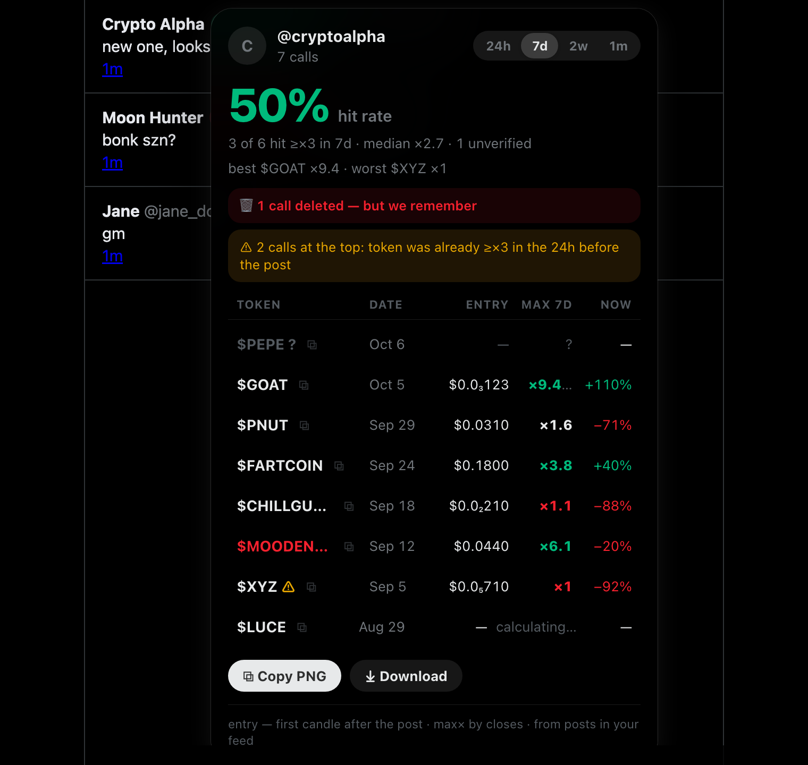
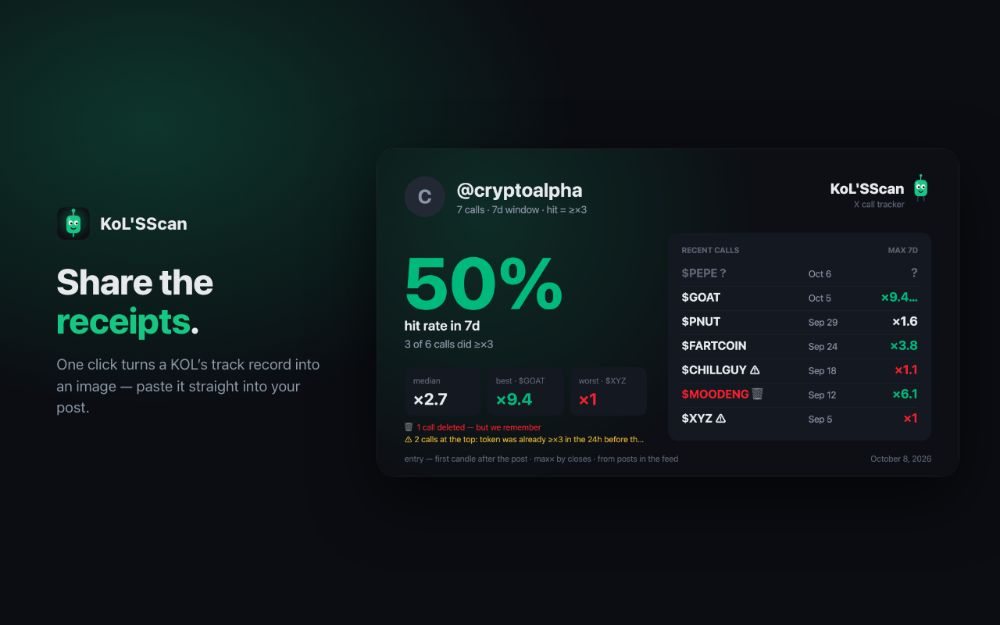
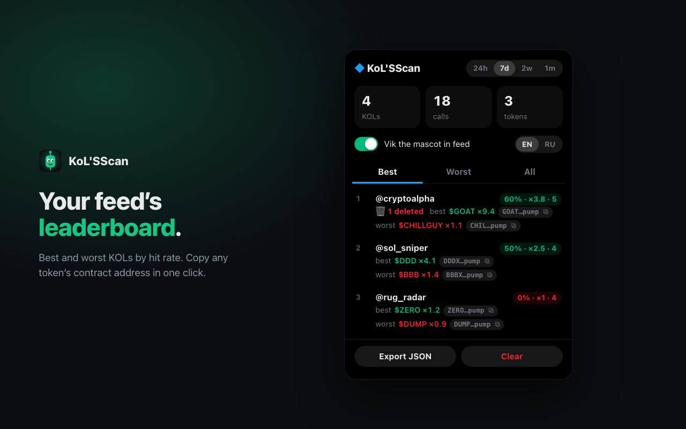
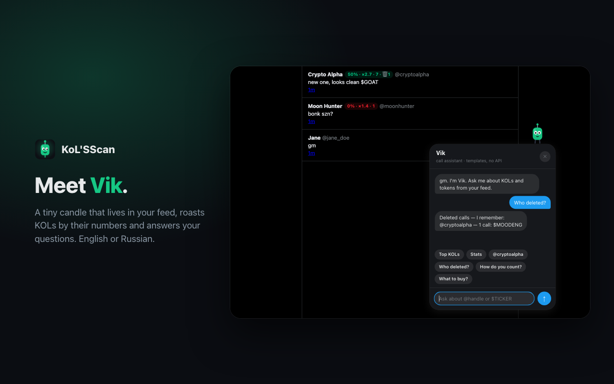
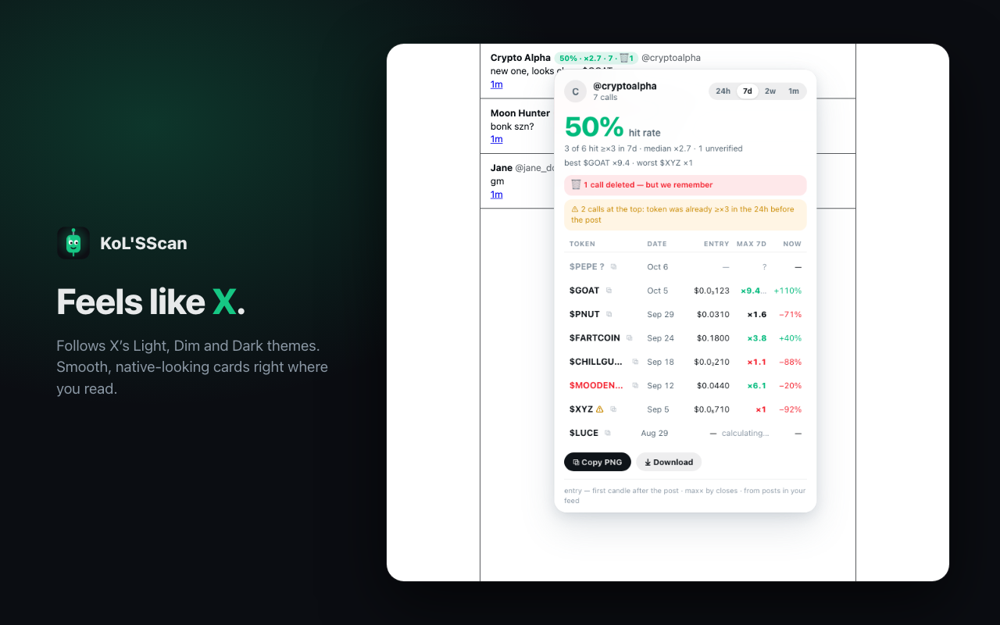

Every KOL call,
scored.
A Chrome extension for X. It spots token calls in your feed and shows how they actually played out — hit rate, entry right after the post, max× over 24h / 7d / 2w / 1m, and the calls the author quietly deleted.
Add to Chrome — it's freev1.0.1 on the Chrome Web Store · No account · No trackers

Honest hit rateEntry is the first candle after the post — the price a reader could actually get. A hit is ×3 or more.
“Deleted it”When a KOL deletes a post with a bad call, KoL'SScan notices — and remembers.
Called at the topFlags calls where the token had already 3×’d in the 24h before the post.
LeaderboardBest and worst KOLs from your feed, filtered by chain. Copy any token’s contract address in one click.
Share the receiptsTurn a KOL’s track record into an image and paste it straight into your post.
Scan a profileOpen any KOL’s profile and collect their calls from the last 50, 100 or 200 posts.
Compare & watchPut two KOLs side by side, star the ones you follow — their calls light up in your feed.
Community baseCalls found by other users show up for you too. Every post is verified on X first.
Private by designNo accounts, no trackers. Your history lives in your browser; only public call data goes to the community base — and you can switch it off. Privacy policy.
A closer look



